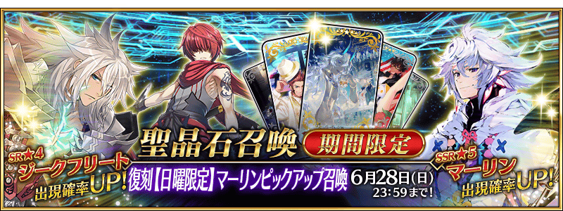
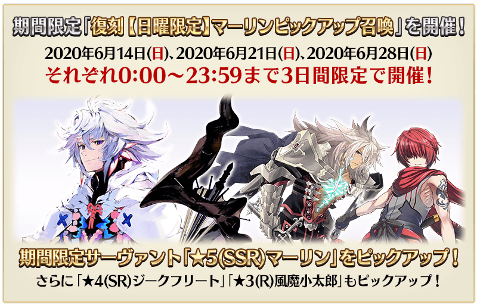
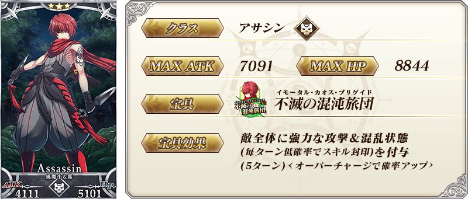
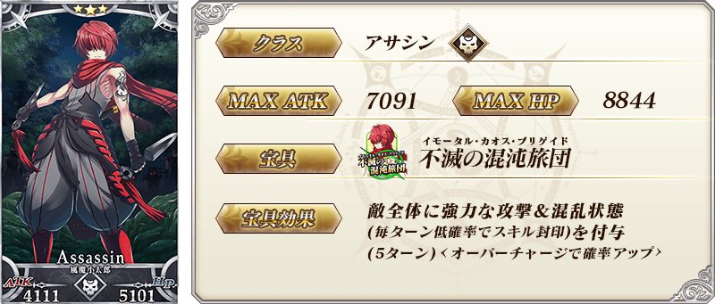
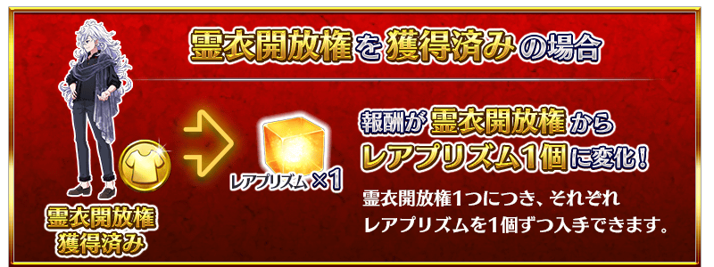
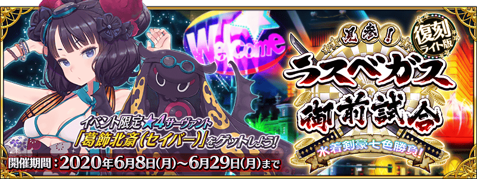
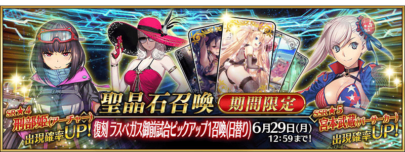

變更在2019年舉辦的「【日曜限定】梅林Pick Up召喚」一部份內容進行復刻。
期間限定活動「復刻:見參！ 拉斯維加斯御前試合～泳裝劍豪七色勝負！ 輕量版」關聯的期間限定從者「★5(SSR)梅林」以2020年6月14日(日)、2020年6月21日(日)、2020年6月28日(日)的3天內限定登場！ ・★5(SSR)梅林
包含上述從者，下述的從者Pick Up！ ・★5(SSR)梅林 ・★4(SR)齊格飛 ・★3(R)風魔小太郎
並且，於2019年的「【日曜限定】梅林Pick Up召喚」與「拉斯維加斯御前試合Pick Up2召喚(每日交替)」登場的下述期間限定概念禮裝Pick Up！ ・★5(SSR)プールサイド・バー ・★4(SR)レディース＆ジェントルメン ・★3(R)羊の數え歌 裝備上述3種概念禮裝的話，在期間限定活動「復刻:見參！ 拉斯維加斯御前試合～泳裝劍豪七色勝負！ 輕量版」中會提升活動道具的掉落獲得數。
Pick Up期間中，Pick Up對象從者與概念禮裝的出現機率提升！
詳情請在聖晶石召喚畫面左下的召喚詳細確認。
11次召喚中確定1張★4(SR)以上和確定1位★3(R)以上的從者！ ※確定★4(SR)以上包含從者和概念禮裝。
「★5(SSR)プールサイド・バー」「★4(SR)レディース＆ジェントルメン」「★3(R)羊の數え歌」於預定日後舉辦的聖晶石召喚也能入手。
◆有關從者的注意◆
※下述的從者在Pick Up期間結束後不會追加到故事召喚。
・★5(SSR)梅林
※下述的從者在Pick Up期間結束後仍會在故事召喚被抽出。
・★4(SR)齊格飛
・★3(R)風魔小太郎
◆有關概念禮裝的注意◆
※請注意會做為抽出對象的期間限定概念禮裝只限下述的概念禮裝，其他的期間限定概念禮裝為抽出對象外。
・★5(SSR)プールサイド・バー
・★4(SR)レディース＆ジェントルメン
・★3(R)羊の數え歌
※下述的概念禮裝，就算Pick Up期間中能靠友情點數召喚獲得。
・★3(R)羊の數え歌
※請注意在自動變還設定登錄★3(R)概念禮裝的情況，下述的概念禮裝會是自動變還的對象。
・★3(R)羊の數え歌
◆「復刻 【日曜限定】梅林Pick Up召喚」Pick Up內容◆
| Pick Up期間 | Pick Up內容 |
|---|---|
| 全天Pick Up | |
| 6/13(六) 23:00～6/14(日) 22:59 | ★5 梅林 ★4 齊格飛 ★3 風魔小太郎 |
| 6/20(六) 23:00～6/21(日) 22:59 | ★5 梅林 ★4 齊格飛 ★3 風魔小太郎 |
| 6/27(六) 23:00～6/28(日) 22:59 | ★5 梅林 ★4 齊格飛 ★3 風魔小太郎 |


 ※上述「★5(SSR)梅林」的卡面為靈基再臨第2階段。
※與在第七特異點做為NPC從者登場時，一部份寶具效果不同。
※上述「★5(SSR)梅林」的卡面為靈基再臨第2階段。
※與在第七特異點做為NPC從者登場時，一部份寶具效果不同。

 ※上述「★4(SR)齊格飛」的卡面為靈基再臨第2階段。
※上述「★4(SR)齊格飛」的卡面為靈基再臨第2階段。
 
※上述「★3(R)風魔小太郎」的卡面為靈基再臨第2階段。

※上述「★3(R)風魔小太郎」的卡面為靈基再臨第2階段。


|
★★★★★SSR
|


|
★★★★SR
|


|
★★★R
|

 ※上述「★5(SSR)梅林」的立繪為靈基再臨第2階段。
※上述「★5(SSR)梅林」的立繪為靈基再臨第2階段。
「★5(SSR)梅林」「★4(SR)齊格飛」「★3(R)風魔小太郎」的靈衣開放權登場做為期間限定活動「復刻:見參！ 拉斯維加斯御前試合～泳裝劍豪七色勝負！ 輕量版」的報酬！
本活動中通過特定活動關卡的話，可做為報酬入手上述靈衣開放權。
想開放靈衣的話，除了靈衣開放權外再加上必須滿足一些開放條件。
還有，在2019年舉辦的期間限定活動「見參！ 拉斯維加斯御前試合～泳裝劍豪七色勝負！」中獲得過靈衣開放權的情況可獲得稀有稜鏡代替靈衣開放權。

◆有關靈衣開放權的注意◆
※「★5(SSR)梅林」「★4(SR)齊格飛」「★3(R)風魔小太郎」的靈衣開放權只限期間限定活動「復刻:見參！ 拉斯維加斯御前試合～泳裝劍豪七色勝負！ 輕量版」的活動舉辦期間中才能入手。
※「★5(SSR)梅林」「★4(SR)齊格飛」「★3(R)風魔小太郎」的靈衣會配合外觀變化一部份語音。
※請注意未持有「★5(SSR)梅林」「★4(SR)齊格飛」「★3(R)風魔小太郎」的情況，可入手靈衣開放權。但無法進行靈衣開放。


「靈衣開放」是自強化畫面進行。
※「靈衣開放」後會自動切換戰鬥角色和圖示。若想回到「靈衣開放」前的狀態和變成其他再臨階段的情況，可自從者詳細畫面變更。 ※進行「靈衣開放」不會讓職階和能力等有所變化。
介紹開放以期間限定復刻中的靈衣「Camelot ＆ Co」「スーパー・クールビズ」「夏休み満喫用忍び装束」的「★5(SSR)梅林」「★4(SR)齊格飛」「★3(R)風魔小太郎」寶具演出！
在「Fate/Grand Order」官方網站內的公告中，以影片公開寶具演出，敬請確認。
【Camelot ＆ Co】
【スーパー・クールビズ】
【夏休み満喫用忍び装束】
介紹在本召喚Pick Up的3位從者寶具演出！
在「Fate/Grand Order」官方網站內的公告中，以影片公開寶具演出，敬請確認。
【★5(SSR)梅林】
【★4(SR)齊格飛】
【★3(R)風魔小太郎】
其他還有，期間限定活動「復刻:見參！ 拉斯維加斯御前試合～泳裝劍豪七色勝負！ 輕量版」和期間限定「復刻 拉斯維加斯御前試合Pick Up1召喚(每日交替)」同時舉辦！
關於詳情，請自下述橫幅確認。
■「復刻:見參！ 拉斯維加斯御前試合～泳裝劍豪七色勝負！ 輕量版」詳細情報 
■「復刻 拉斯維加斯御前試合Pick Up1召喚(每日交替)」詳細情報 